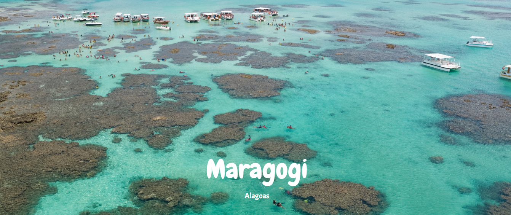

Conhecida como o Caribe brasileiro, Maragogi é um dos mais encantadores destinos
no Nordeste. Localizada em Alagoas, a cidade possui praias lindas, ótimos passeios
e revela paisagens incríveis. Ideal para ser visitada durante o verão, sem dúvida, é
o melhor destino para você curtir as suas férias. Conhecida como o “Caribe brasileiro”
é considerado um dos melhores destinos do nordeste do Brasil. Um lugar paradisíaco,
perfeito para quem deseja tirar férias, alguns dias de folga do trabalho e/ou estudos,
sair da rotina e descansar na beira do mar enquanto conhece algumas das melhores
praias do nosso país.
